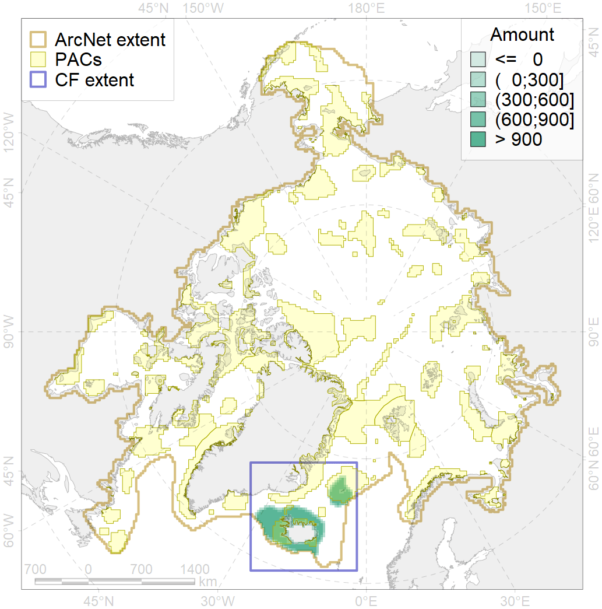
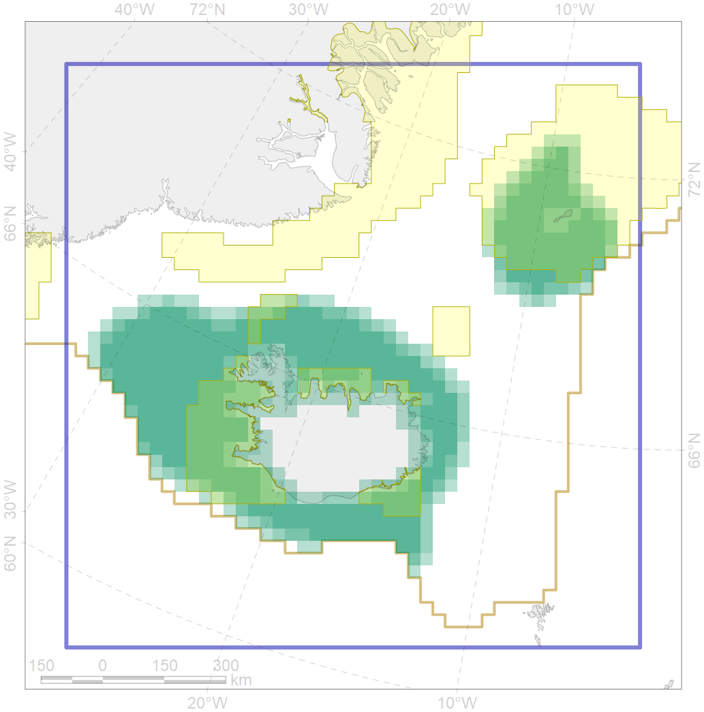

5066

| CF ID | 5066 |
| CF Name | Minke whale feeding areas in the Central Atlantic |
| Time Period | 1986-2001 |
| Source(s) | Ramirez-Martinez et al 2017; NAMMCO |
| Seasonality | June-September |
| Depth Horizon | 0-200 |
| Methodology | Aerial and ship surveys |
| Author Name | Filatova |
| Notes | |
| Conservation Target Set in the Scenario | 0.12 |
| Conservation Target Achieved in the Scenario | 0.401 (Scenario: 333.9%) |
| PAC ID | Proportion in the PAC | Contribution to ArcNet Target Achievement | PAC’s Contribution to the Achieved Target |
|---|---|---|---|
| 34 | 17.7% | 134.5% | 40.3% |
| 37 | 1.3% | 5.9% | 1.8% |
| 38 | 14.0% | 98.6% | 29.5% |
| 39 | 2.9% | 20.8% | 6.2% |
| 40 | 0.6% | 3.8% | 1.2% |
| 41 | 2.8% | 13.4% | 4.0% |
| inner | 39.3% | 276.9% | 82.9% |
| outer | 60.3% | 57.0% | 17.1% |